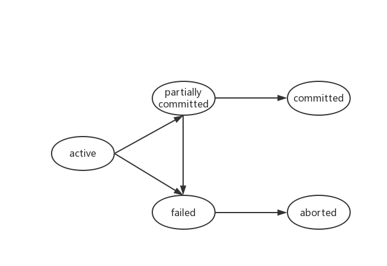

Lecture 1
“非高级”数据库技术
数据模型 (数据保存)
- 层次模型 IMS (deprecated)
- 网状模型 (deprecated)
- 关系模型 DB2 (1970s)
- 函数模型
- OO模型 (语言直接管理)
- OR模型 (object and relationship)
- XML
- $\cdots$
查询 / 更新
- 关系代数
- 关系演算
- table: relation (row: tuple; column: attribute)
查询处理与优化 $\Rightarrow$ 查询计划
Ch14 事务
A transaction is a unit of program execution that accesses and possibly updates various data items
- 目标: 保证DB一致性
- 问题: 不一定完整执行
- 系统故障: OS崩溃，事务失败
- 并发: 事务交叉执行
- egs. 转账
- 用户： 一个操作 | 数据库系统：多个操作
- 多个操作不可分割(全做/全不做)
性质 (ACID)
| 性质 | 描述 | 负责 |
|---|---|---|
| 原子性（Atomicity） | 多个操作全做/全不做 | DBMS |
| 一致性（Consistency） | 事物的开始和结束状态，DB具有一致性 过程中可能不一致 |
程序员 |
| 隔离性（Isolation） | 事物之间不互相干扰 eg. 转账事务（已存A未取B）& 查询银行账户总额 |
DBMS |
| 耐损性（Durability） | 事务完成提交即不会因任何机器故障而使事务结果错误 | DBMS |
Note:
- 事务： 做完语句 $\Rightarrow$ 系统确认 $\Rightarrow$ 提交状态(事务真正结束)
提交状态中，数据可能在内存中，未存盘 - 耐损性: 通过一些恢复机制, 保证在这个状态下，系统故障不会导致事务对DB的更新丢失
存储结构
- 易失性存储器
- 非易失性存储器: 磁盘，闪存，非易失RAM
- 稳定存储器（原子性，耐久性依赖于此）
状态
| 状态 | 描述 |
|---|---|
| 活动的（Active） | 初始状态，事务执行时的状态 |
| 部分提交（Partially Commited） | 最后一条语句执行之后，数据可能在内存中，可能因故障中止（恢复机制未就绪？） |
| 失败（Failed） | 发现不能正常执行 |
| 中止（Aborted） | 撤销对DB的所有改变，保证原子性 |
| 提交（Committed） | 事务成功完成，稳定存储器有足够信息保证耐损性（恢复机制就绪) 不可回滚，只能通过 补偿事件撤销 |

可见的外部写也是不可撤销的(如屏幕，ATM现金，邮件), DB系统不负责，通常在事务提交之后执行
并发
并发的优势
- 提高吞吐量和资源利用率
- 吞吐量： 单位时间内执行的事务数目
- 资源空闲时间减少
- 减少平均响应时间
调度
并发事务的指令按时间顺序执行形成的指令序列
- 一组事务的一个调度
- 包括所有事务的所有指令
- 保持各个事务内的指令顺序
- 串行调度在无故障的情况下可以保证系统一致性
CPU根据时钟切换指令执行，调度控制器通过可串行化检测确认是否可以切换，如果不可以则强制继续执行原来事务的指令
冲突
事务 $T_i$ 和 $T_j$ 的指令 $l_i$ 和 $l_j$ 冲突当且仅当 $l_i$ 和 $l_j$ 存取同一数据项 $Q$ , 且两者中至少有一条write(Q)指令
- 发生冲突的两条指令的时间顺序不可颠倒
如果 $l_i$ 与 $l_j$ 在一个调度中是相继的且不冲突, 则即使交换其顺序也能保持相同结果
冲突等价: 若调度 $S$ 通过一系列非冲突指令的交换,转换成调度$S^{\prime}$, 则称 $S$ 与 $S^{\prime}$ 冲突等价
- 冲突可串行化: 若调度S 与一个串行调度冲突等价, 则称S是冲突可串行化的
- 可通过优先图检查是否是冲突可串行化的
可恢复调度
若事务 $T_j$ 读事务 $T_i$ 先前写过的数据项, 则 $T_i$ 必须先于 $T_j$ 提交
级联回滚
单个事务失败导致一系列事务回滚
- 未提交的事务可能回滚，进而导致级联回滚
- 每个无级联回滚调度也是可恢复的调度
弱一致性级别
- 由程序员确保DB一致性
- serializable, repeatable read, read commited, read uncommited